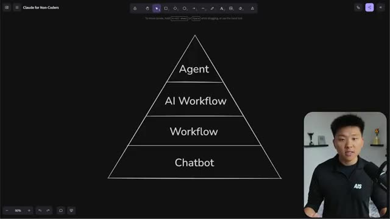
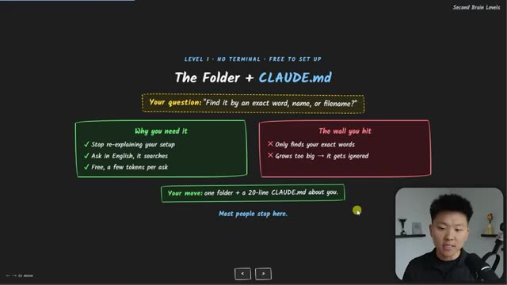

Конспект видео-курса · Nate Herk | AI Automation · 2026-07-11 · 6 часов Video course digest · Nate Herk | AI Automation · 2026-07-11 · 6 hours
Claude Code для не-программистов: бесплатный 6-часовой курс Claude Code for non-coders: a free 6-hour course
Смотреть курс ↗Watch the course ↗
Шестичасовой бесплатный курс, который ведёт зрителя от «что такое Claude Code» до собственной системы автоматизаций — и целиком адресован людям без опыта программирования. Это самая полная попытка систематизировать «агентную грамотность» для широкой аудитории: 35 глав, от установки до облачных routine-автоматизаций. Конспект ниже — по структуре курса; для чтения по диагонали достаточно четырёх смысловых блоков. A free six-hour course taking the viewer from "what is Claude Code" to their own automation system — aimed squarely at people with no programming background. It's the most complete attempt yet to systematize "agent literacy" for a broad audience: 35 chapters, from installation to scheduled cloud automations. The digest below follows the course structure; four thematic blocks cover it for a diagonal read.
Блок 1 — мышление (0:00–0:31): модель — не главноеBlock 1 — mindset (0:00–0:31): the model isn't the point
Курс начинается не с команд, а с картины мира: чем Chat, Cowork и Code отличаются друг от друга [01:00], ключевая аналогия «модели против контекста» [05:04] и «12 сдвигов мышления» — от разового промптинга к построению систем [06:48]. Здесь же — различие prompt engineering и context engineering [14:52] и идея «собери своего Джарвиса» итерациями вкуса [17:33]. The course opens not with commands but with a worldview: how Chat, Cowork and Code differ [01:00], the core "models vs context" analogy [05:04], and "12 mindset shifts" — from one-off prompting to building systems [06:48]. Also here: prompt vs context engineering [14:52] and "build your own Jarvis" through taste iterations [17:33].
Блок 2 — основы (0:31–1:20): файлы, проект, ключи, приватностьBlock 2 — foundations (0:31–1:20): files, project, keys, privacy
Практический старт: установка и первые промпты [31:44], работа с локальными файлами (Excel, HTML) [34:09], токены и выбор модели [43:25], настройка проекта через claude.md и settings.json [48:10], подключение инструментов по API-ключам и .env [1:00:06], режимы прав и приватность [1:09:59]. The practical start: installation and first prompts [31:44], working with local files (Excel, HTML) [34:09], tokens and model choice [43:25], project setup via claude.md and settings.json [48:10], connecting tools with API keys and .env [1:00:06], permission modes and privacy [1:09:59].
Блок 3 — система (1:20–3:19): скиллы, память, субагентыBlock 3 — the system (1:20–3:19): skills, memory, subagents
Ядро курса — «собственная AI-операционная система» [1:20:31]: подключение Google Workspace (CLI против MCP) [1:25:08], глубокое погружение в скиллы [1:40:28], контекстное окно и передача сессий [1:56:13], память и «второй мозг» [2:03:17], субагенты — что это, когда их применять и постройка своего «Plan Roaster» [2:20:23]. Завершают блок постройка и клонирование сайтов с деплоем на GitHub/Vercel [2:53:11] и «пирамида AI-систем» — рамка доверия к выводу агента [3:18:58]. The course's core — "your own AI operating system" [1:20:31]: connecting Google Workspace (CLIs vs MCPs) [1:25:08], a skills deep dive [1:40:28], the context window and session handoff [1:56:13], memory and the "second brain" [2:03:17], subagents — what they are, when to use them, and building a "Plan Roaster" [2:20:23]. The block closes with building and cloning sites deployed via GitHub/Vercel [2:53:11] and the "AI systems pyramid" — a frame for trusting agent output [3:18:58].

Блок 4 — автономия (3:36–5:58): второй мозг и автоматизацииBlock 4 — autonomy (3:36–5:58): the second brain and automations
Финальная треть — про системы, работающие без вас: пять уровней «второго мозга» (от папки с CLAUDE.md до графов знаний со скиллом grill-me) [3:56:28] [4:13:43], субагенты против команд агентов [4:31:50], расписания и облачные routine [4:45:35], постройка исследовательской автоматизации [5:03:03] и управление токенами с кэшированием промптов [5:27:13]. The final third is about systems that run without you: five levels of the "second brain" (from a folder with CLAUDE.md to knowledge graphs with the grill-me skill) [3:56:28] [4:13:43], subagents vs agent teams [4:31:50], scheduled and cloud routines [4:45:35], building a research automation [5:03:03], and token management with prompt caching [5:27:13].

Почему это важно: порог входа в агентные инструменты продолжает падать — теперь полный путь «от нуля до личной системы автоматизаций» упакован в один бесплатный курс для гуманитариев. Для тех, кто внедряет агентов в командах, это готовая программа онбординга нетехнических коллег. **Why it matters:** the barrier to agent tooling keeps dropping — the full path from zero to a personal automation system is now packed into one free course for non-technical people. For anyone rolling out agents in teams, it's a ready-made onboarding curriculum for non-engineering colleagues.
Конспект построен по оглавлению курса (35 глав); кадры извлечены по таймкодам глав. Digest built from the course's chapter list (35 chapters); frames extracted at chapter timestamps.